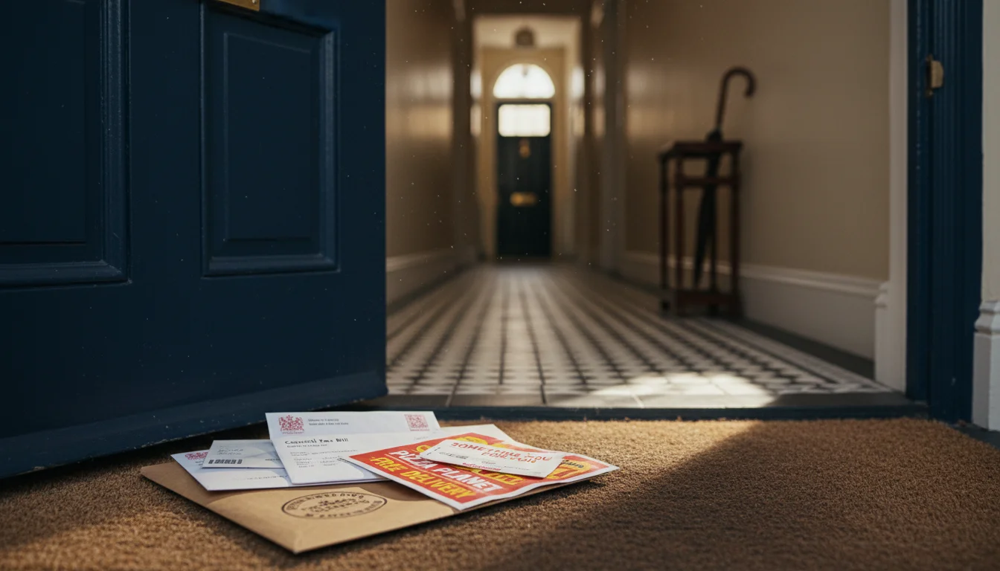

לנהל דירה ריקה בלונדון מישראל - מה באמת צריך לדעת
הדירה מוכנה. אתם בישראל. ועכשיו מה?
השיפוץ נגמר. הדירה נראית בדיוק כמו שרציתם. הילדים כבר בחרו מיטות, הארונות מלאים, יש אפילו קפה במטבח. טסתם חזרה לישראל, ועכשיו הדירה הזו - הדירה של המשפחה בלונדון - יושבת ריקה.
לא חודש. לא חודשיים. תשעה חודשים בשנה, לפעמים עשרה. אתם מגיעים לשלושה שבועות באוגוסט, אולי שבוע בחנוכה, אולי סופשבוע ארוך לפסח. כל שאר הזמן - הדירה לבד. שקטה, חשוכה, סגורה.
וכאן מתחיל החלק שאף אחד לא מדבר עליו. כולם מדברים על הרכישה, על השיפוץ, על העלויות שמעבר למחיר. אבל מה קורה אחרי? מה קורה עם דירה ריקה בלונדון, שנה אחרי שנה?
הרבה. ניהול נכס מרחוק בלונדון עולה כסף, דורש תשומת לב, ויכול להפתיע אתכם ברגעים הכי לא נוחים. כי המערכת הבריטית בנויה על הנחה בסיסית: שמישהו גר בדירה. שמישהו פותח את הדואר, מרגיש שהרדיאטור קר, שם לב לכתם רטוב על התקרה. כשאף אחד לא שם - דברים נופלים בין הכיסאות.
אם ניהלתם שיפוץ מרחוק - אתם כבר יודעים שלונדון דורשת נוכחות על הקרקע. הדירה הגמורה דורשת את אותו הדבר, רק שהפעם זה לא פרויקט עם סוף ברור. זה ניהול שוטף, שנה אחרי שנה, כל עוד הדירה שלכם.
ביטוח - הפוליסה שלכם כנראה לא מכסה דירה ריקה
משהו שרוב הישראלים לא יודעים: פוליסת ביטוח דירה רגילה בבריטניה מפסיקה לכסות אתכם אחרי 30 יום רצופים שהדירה ריקה.
שלושים יום. לא שנה. לא חצי שנה. חודש.
בישראל, הביטוח לא מתעניין אם טסתם לחופשה ארוכה. טסתם לשלושה חודשים לתאילנד? אף אחד לא שאל. הפוליסה תקפה.
בלונדון, אם הדירה ריקה 31 יום ואז צינור מתפוצץ - הפוליסה הרגילה לא מכסה. חלק מחברות הביטוח משתמשות בסף של 60 יום, אבל הסטנדרט בענף הוא 30. ולא סתם מצמצמות כיסוי - הן פשוט מבטלות אותו. גניבה, ונדליזם, נזקי מים - כלום.
תביעה ממוצעת על צינור שמתפוצץ? מעל 9,000 פאונד. ואם המים הגיעו לדירה של השכן מתחת - ההוצאה שלכם יכולה להכפיל את עצמה. בלי ביטוח, זה מהכיס שלכם.
אז מה עושים? ביטוח דירה שנייה בלונדון דורש פתרון מיוחד - unoccupied property insurance. הוא יותר יקר מביטוח רגיל - בין 300 ל-800 פאונד בשנה תלוי בגודל הנכס ובמיקום - אבל הוא מכסה דירה שיושבת ריקה לתקופות ארוכות. יש כמה חברות שמתמחות בזה: Everywhen (של קבוצת Towergate), GuardCover, וגם Simply Business מתווכים ביטוח כזה.
אבל יש תנאי שחשוב להבין. הביטוח הזה דורש שמישהו יבדוק את הדירה כל 7 עד 14 יום. לא טלפון. לא "חבר שגר בשכונה שאולי יעבור". ביקור פיזי, מתועד, עם תאריך ושעה.
חברות הביטוח רוצות הוכחה שמישהו נכנס, בדק שאין נזילות, שההסקה עובדת, שהדירה מאובטחת - ויצא. בלי התיעוד הזה, במקרה של תביעה, הם יכולים לטעון שלא עמדתם בתנאי הפוליסה. והפוליסה לא שווה את הנייר שהיא כתובה עליו.
כלומר: אי אפשר רק לקנות ביטוח ולשכוח. הביטוח הוא רק הבסיס - הוא מחייב תחזוקה שוטפת, key holder זמין, ואמצעי מניעה בחורף. וזה בדיוק מה שמוביל לסעיפים הבאים.
חורף בלונדון בלי אף אחד בבית
ישראלים קונים דירה בלונדון באביב, משפצים בקיץ, נהנים באוגוסט עם הילדים - וחוזרים לישראל בספטמבר. ואז מגיע החורף הבריטי. והדירה ריקה. מנובמבר עד מרץ, חמישה חודשים שבהם אף אחד לא נכנס.
צינורות קפואים הם הסיכון מספר אחת בדירה ריקה בלונדון. הטמפרטורה בלונדון יורדת מתחת לאפס - לא כמו מוסקבה, אבל מספיק כדי להקפיא מים בצינור. המים קופאים, הצינור מתנפח ומתפוצץ, ואין אף אחד שם כדי לשים לב. עד שמישהו מגלה - אולי השכן ששם לב לכתם על התקרה, אולי שירות הבדיקות בביקור הבא - כבר יש נזק מים לרצפה, לקירות, ולשכן מתחת. תביעה ממוצעת - מעל 9,000 פאונד.
הפתרון פשוט, אבל צריך לדעת אותו: להשאיר את ההסקה על 14-15 מעלות צלזיוס. כל החורף. גם כשאין אף אחד בבית. כן, זה עולה כמה מאות פאונד בשנה בחשמל או גז. אבל זה שבריר מהעלות של צינור שמתפוצץ ו-9,000 פאונד נזק.
בנוסף - לבודד צינורות חשופים, במיוחד בארונות חיצוניים ובעליות גג. להשאיר דלתות ארונות פתוחות כדי שאוויר חם יגיע לצינורות שמאחוריהם.
אפשרות אחרת - לרוקן לגמרי את מערכת המים לפני שעוזבים. חברות ביטוח מקבלות את זה כחלופה לגיטימית. אבל זה אומר שכשמגיעים לביקור צריך למלא מחדש את כל המערכת, ולא כל דירה בנויה לזה. אם אתם מגיעים לסופשבוע ארוך ופתאום אין מים - זה לא אידיאלי.
וזה לא רק צינורות. דירה סגורה בחורף בריטי צוברת לחות. בלי אוורור, עובש יכול להתפתח תוך שבועיים. עובש על קירות, על בגדים בארונות, על הרהיטים.
צריך להשאיר דלתות פנימיות פתוחות, להרחיק רהיטים מהקירות, לוודא שפתחי אוורור לא חסומים, ולפתוח חלון ביום יבש לפחות פעם בחודש. מישהו צריך לעשות את זה. וה"מישהו" הזה לא יכול להיות אתם - אתם בישראל.
מי מחזיק מפתח
יש שאלה אחת שפותרת חצי מהבעיות: מי מחזיק מפתח לדירה שלכם?
אם אתם בישראל ומשהו קורה - נזילה, אזעקה שמצפצפת בשלוש בלילה, חברת הביטוח ששולחת שמאי, אינסטלטור שצריך להיכנס - מישהו צריך להיות שם תוך שעות, לא תוך טיסה. חברת הביטוח תשאל אתכם מי ה- key holder. לחברת הניהול של הבניין צריך להיות שם ומספר של מישהו שיכול להגיע. ואם הקבלן צריך לתקן משהו שהתגלה בבדיקה - מישהו צריך לפתוח את הדלת.
יש כמה אפשרויות:
קונסיירז' של הבניין - אם הדירה בבניין עם קונסיירז', זה הפתרון הכי פשוט. יש לו מפתח, הוא שם, הוא יכול להכניס בעלי מקצוע. אבל לא כל בניין בלונדון מציע את זה.
שכן שסומכים עליו - עובד, אבל זה לא פתרון לטווח ארוך. שכנים מתחלפים, עוברים דירה, ולא כל אחד מוכן לקחת אחריות על דירה של מישהו אחר לאורך שנים.
שירות בדיקות תקופתיות - יש חברות בלונדון שמתמחות בדיוק בזה. הן מחזיקות מפתח, מגיעות לביקורות קבועות, בודקות את הדירה, ומדווחות לכם עם תמונות ודוח מסודר. חברות כמו Chambré ו- Clearway מציעות שירותי ניהול נכסים ריקים - ביקורות, key holding, תגובה לחירום. יש גם חברות אבטחה עם רישיון SIA כמו DCS Group שמציעות key holding ותגובה לאזעקות. עלות: 100 עד 250 פאונד בחודש, תלוי בתדירות ובהיקף.
היתרון של שירות מקצועי על פני חבר: יש להם ביטוח אחריות, התיעוד שלהם עומד בדרישות חברת הביטוח, ויש להם זמינות 24/7 לחירום. חבר טוב יגיד לכם "הכל בסדר" - שירות מקצועי ישלח דוח עם תמונות.
הדבר החשוב - לא לחכות עם זה. ביום שטסים חזרה לישראל, צריך שיהיה מישהו עם מפתח שיודע שהוא אחראי. וצריך לוודא שחברת הניהול של הבניין יודעת מי זה ואיך ליצור איתו קשר.
דואר, חשבונות, ותקשורת עם הבניין

עוד הבדל שישראלים מגלים באיחור.
בישראל, ועד הבית מתקשר למספר הנייד שלכם. שולח הודעה בוואטסאפ. מדביק פתק בלובי. בלונדון, חברת הניהול של הבניין שולחת מכתב. לכתובת הדירה. נקודה.
הם לא בודקים אם אתם שם. הם לא יודעים שאתם בישראל. הם שולחים מכתב, וזה האחריות שלכם לקרוא אותו.
ומה יש במכתבים האלה? דברים שאם לא קוראים אותם בזמן, זה עולה כסף. דרישת תשלום service charge - שהיא הוצאה שוטפת משמעותית - עם מועד תשלום שעובר בשקט. הזמנה ל- AGM של הבניין, שבו מצביעים על התקציב השנתי ועל עבודות תחזוקה.
ובעיקר - הודעת Section 20.
Section 20 היא הודעה שחברת הניהול חייבת לשלוח כשיש עבודות תחזוקה גדולות - חלק ממערכת ה- leasehold - שעולות מעל 250 פאונד ללייסהולדר. זה יכול להיות שיפוץ חזית, החלפת גג, תיקון מעלית.
ההודעה נותנת לכם 30 יום להגיב. לא הגבתם? איבדתם את הזכות לערער על העלות. והעלות הזו מתווספת ל- service charge שלכם.
עכשיו דמיינו: ההודעה הגיעה לדירה ריקה. היא יושבת על שטיח הכניסה עם חשבון חשמל, פליירים של פיצה, ומכתב מה- council. אתם בתל אביב. 30 יום עוברים. אתם מגלים את זה בביקור הבא - שלושה חודשים מאוחר מדי.
Royal Mail Redirection - אפשר להפנות דואר לכתובת בחו"ל. עלות - 275 פאונד בשנה להפניה בינלאומית, עוד 30 פאונד לכל אדם נוסף באותה כתובת.
אבל יש מגבלות: לא מעבירים חבילות מעבר לגודל מכתב רגיל. כלומר דואר רגיל עובר, אבל חבילות ומסמכים עבים - לא. וההפניה ניתנת לחידוש עד שנתיים מתאריך ההתחלה.
תיבת דואר וירטואלית - חלופה יותר טובה למי שרוצה שליטה מלאה. שירותים כמו UK Postbox או Hoxton Mix מקבלים את הדואר שלכם, סורקים אותו, ושולחים לכם סריקה דיגיטלית. אתם רואים מה הגיע בלי לחכות שבועיים שהמכתב יגיע לישראל בדואר רגיל. עלות - 15 עד 30 פאונד בחודש.
והכי חשוב: לעדכן את חברת הניהול של הבניין שאתם בעלי נכס בחו"ל. לתת להם כתובת מייל, מספר טלפון ישראלי, ולבקש שישלחו כל הודעה גם בדיגיטל.
חוקית, הם חייבים לכלול כתובת חלופית אם נתתם להם אחת. לא כולם עושים את זה בפועל, אבל חייבים לנסות. תעדו את זה בכתב - שלחו מייל ושמרו אותו.
council tax על דירה ריקה
מאפריל 2025, רוב הרשויות המקומיות בלונדון גובות תוספת של 100% על council tax לדירות שנייה. כפול. על דירה שאתם משלמים עליה council tax מלא בלי לגור בה - עכשיו משלמים פעמיים.
ההגדרה של "דירה שנייה" לצורך council tax: נכס מרוהט שאף אחד לא גר בו כבית עיקרי. זה בדיוק - בדיוק - המצב של הדירה שלכם בלונדון. מרוהטת, עם הדברים של הילדים בארונות, והמשפחה בישראל.
ווסטמינסטר - תוספת 100%. Camden - תוספת 100%. City of London - תוספת 100%. כמעט 75% מהרשויות באנגליה אימצו את התוספת מאפריל 2025.
יוצאת דופן בולטת: Kensington & Chelsea (RBKC) החליטו על 0% תוספת ל-2025/26. אם הדירה שלכם שם - חסכתם. אבל רוב השכונות שישראלים קונים בהן - המפסטד, סנט ג׳ונס ווד, מרילבון, פרימרוז היל - נמצאות בבורואים עם תוספת מלאה.
כדי להבין את הסכומים - council tax בלונדון יכול להיות 2,000 עד 3,500 פאונד בשנה על הדירות שישראלים בדרך כלל קונים. עם התוספת, מדובר ב-4,000 עד 7,000 פאונד בשנה. על דירה ריקה.
 העלויות שאף אחד לא מספר לכם על נכס בלונדוןעלויות נכס בלונדון מעבר למחיר הרכישה. council tax כפול, service charge, ground rent, stamp duty עם שלוש תוספות - וחשבון שנתי שמפתיע את כולם
העלויות שאף אחד לא מספר לכם על נכס בלונדוןעלויות נכס בלונדון מעבר למחיר הרכישה. council tax כפול, service charge, ground rent, stamp duty עם שלוש תוספות - וחשבון שנתי שמפתיע את כולם
ולשים לב - אם הדירה ריקה מעל שנה ולא מרוהטת, היא נכנסת לקטגוריה אחרת: empty home. שם התוספות אפילו גבוהות יותר - עד 200% אחרי חמש שנים ועד 300% אחרי עשר. אבל זה בדרך כלל לא רלוונטי לדירות של ישראלים, שהן מרוהטות ומשמשות לביקורים.
יש פטורים מסוימים לדירות שנייה, אבל הם נדירים ולא חלים על המקרה הקלאסי של משפחה ישראלית עם דירה בלונדון. כדאי לבדוק עם הרשות המקומית הספציפית שלכם, אבל לתכנן לפי תשלום כפול.
בדיקות תקופתיות - מה בודקים ומתי
ביטוח unoccupied property דורש ביקורים כל 7 עד 14 יום. אבל גם בלי הדרישה של הביטוח - תחזוקת נכס בלונדון מחייבת עין על הדירה.
מה בודקים בביקור?
- אבטחה - הדלת נעולה, החלונות סגורים, אין סימני פריצה, אין נזילה מהכניסה
- דואר - מה הגיע, מה דחוף, מה צריך להעביר לכם
- חימום - ההסקה עובדת, הטרמוסטט על 14-15 מעלות, הרדיאטורים חמים
- לחות ועובש - בדיקת קירות, חלונות, ארונות. פתיחת חלון ביום יבש
- נזילות - מתחת לכיורים, ליד מכונת כביסה, בחדרי רחצה
- תקינות כללית - חשמל עובד, מים זורמים, אין ריח חריג
הביקור לוקח 30-45 דקות. עם תיעוד - תמונות ודוח קצר שנשלח אליכם. ככה אתם יודעים שהדירה בסדר בלי לטוס.
תדירות? פעם בשבועיים היא הסטנדרט שחברות ביטוח דורשות. פעם בשבוע עדיף בחורף, כשהסיכון של צינורות קפואים ועובש עולה. אפשר לעשות את זה דרך חבר אמין בלונדון, אבל כמו שאמרנו - שירות מקצועי עם ביטוח אחריות ותיעוד מסודר עדיף, כי התיעוד שלהם מוכר על ידי חברת הביטוח.
עוד דבר: אם יש לכם שירות בדיקות, תתאמו איתם את ההכנה לביקור שלכם. שבוע לפני שהמשפחה מגיעה, שמישהו ידליק את ההסקה על טמפרטורה גבוהה יותר, יבדוק שהכל עובד, יוודא שאין הפתעות.
אתם רוצים להיכנס לדירה ולהרגיש "בית" - לא להתחיל ביקור עם רשימת תקלות.
כמה זה עולה בפועל
זה החשבון השנתי של דירה ריקה בלונדון. לא כולל משכנתא. לא כולל שיפוצים. רק לשמור על הדירה.
| הוצאה | עלות שנתית (פאונד) |
|---|---|
| ביטוח unoccupied property | 300 - 800 |
| בדיקות תקופתיות (פעמיים בחודש) | 1,200 - 3,000 |
| הפניית דואר / תיבה וירטואלית | 200 - 400 |
| council tax (עם תוספת דירה שנייה) | 4,000 - 7,000 |
| service charge | 3,000 - 8,000 |
| חשמל, גז, מים (standing charges) | 800 - 1,500 |
| סה"כ | 9,500 - 20,700 |
עשרת אלפים עד עשרים אלף פאונד בשנה. על דירה שרוב הזמן אף אחד לא גר בה.
על דירה בווסטמינסטר עם service charge גבוה ו- council tax כפול, אתם בקלות בחלק העליון של הטווח. על דירה קטנה יותר בבורו עם service charge סביר, אפשר להישאר קרוב לתחתית.
זה לא כדי להפחיד. זה כדי לתכנן. כשאתם מחליטים לקנות דירה שנייה בלונדון, המספר הזה צריך להיכנס לתקציב מהיום הראשון - זה חלק מהתהליך שאני עוברת עם כל לקוח. לא כהפתעה בשנה השנייה. ולא כמספר שמגלים כשפתאום מבינים שהדירה עולה הרבה יותר ממה שחשבו.
מה שבאמת משנה
הדירה הזו בלונדון היא לא "נכס להשקעה" עם מספר תיק. זו הדירה עם חדר הילדים שהם בחרו את הצבע שלו. עם הספה שקניתם ביחד ב- Heal's. עם המגפיים ליד הדלת מהחורף שעבר. עם ציורים של הילדים על המקרר ומשחקי קופסה בארון. זה בית שני, לא יחידת השקעה.
כל האתרים בעברית שכותבים על נדל"ן בלונדון מתייחסים לנכס כהשקעה - "חברת ניהול ב-8-10% מדמי השכירות." אבל אתם לא משכירים. הדירה ריקה כי היא מחכה למשפחה, לא לדייר.
וזה סוג אחר לגמרי של ניהול - עם אתגרים שאף אחד לא כתב עליהם בעברית עד עכשיו. קצת על הרקע שלי ואיך הגעתי לכאן.
ולכן שווה לנהל אותו כמו שצריך. לא לקוות שהכל יהיה בסדר, אלא לוודא. ביטוח מתאים, מישהו עם מפתח, תקשורת עם הבניין, ותקציב שנתי שלוקח בחשבון את כל מה שכתוב למעלה.
מי שמתכנן את הדירה מראש לשימוש לסירוגין חוסך לעצמו כאב ראש בהמשך. חומרים שעמידים ללחות, מערכת הסקה שאפשר לשלוט בה מרחוק, פתרונות אחסון שעובדים גם כשהדירה מלאה וגם כשהיא ריקה.
 עיצוב דירה לשימוש משפחתי - איך מעצבים דירה בלונדון שעובדת לכולםעיצוב דירה לשימוש משפחתי בלונדון - איך לתכנן דירה שעובדת לזוג בסופש ולמשפחה שלמה באוגוסט. פתרונות מעשיים לחדרי שינה, מטבח, אחסון וחדרי רחצה בדירה שנייה
עיצוב דירה לשימוש משפחתי - איך מעצבים דירה בלונדון שעובדת לכולםעיצוב דירה לשימוש משפחתי בלונדון - איך לתכנן דירה שעובדת לזוג בסופש ולמשפחה שלמה באוגוסט. פתרונות מעשיים לחדרי שינה, מטבח, אחסון וחדרי רחצה בדירה שנייה
ומי שמנהל את זה נכון מהיום הראשון - ישן בשקט גם כשהדירה 3,500 קילומטר משם. וכשהמשפחה נוחתת בהיתרו ופותחת את הדלת - הדירה חמה, נקייה, ומוכנה. כאילו עזבתם אתמול.
צריכים מישהי שתעזור לסדר את כל הסיפור הזה - ביטוח, key holder, תקשורת עם הבניין, תקציב שנתי? דברו איתי ונסגור את הפרטים.
- ביטוח דירה רגיל מתבטל אחרי 30 יום ריקה - צריך unoccupied property insurance (300-800 פאונד בשנה) עם ביקורת כל 7-14 יום
- council tax כפול על דירה שנייה מאפריל 2025 ברוב לונדון - 4,000 עד 7,000 פאונד בשנה. RBKC יוצאת דופן עם 0%
- הסקה על 14-15 מעלות כל החורף - כמה מאות פאונד, לעומת 9,000+ פאונד על צינור שמתפוצץ
- שלושה דברים להסדיר ביום הטיסה חזרה: key holder, הפניית דואר, עדכון חברת ניהול הבניין
- סה"כ עלות שנתית לתחזוקת דירה ריקה: 9,500-20,700 פאונד - מספר שצריך להיכנס לתקציב מהיום הראשון